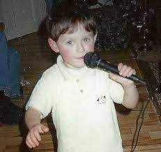
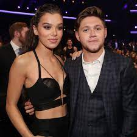

Niall Horan was born in Mullingar, Westmeath County, Ireland, on September 13, 1993. When he was a child, his parents Bobby and Maura Horan divorced. Before settling in with their father, he and his older brother, Greg, alternated between their parents’ two residences. Niall was born and raised in Mullingar, where he attended St. Kenny National School, where he participated in school plays and sang in the choir. Colaiste Mhuire (Mary’s College), located in Mullingar, was where he finished secondary school. He performed in the Mullingar Arts Centre (as part of a fundraiser for the local football team, the Shamrocks) and The Academy in Dublin as a youngster.
Baby Niall Horan.
Horan has been romantically linked to Ellie Goulding, Selena Gomez, and Hailee Steinfeld, and is known for his blonde good features and boy-next-door appeal. Horan co-founded Modest! Golf Management in 2016 as a keen golf fan.
Horan with girlfriend Hailee Steinfeld.
Horan’s first solo single, "This Town," was released in September 2016. Before finally releasing the chart-topping album Flicker in October 2017, he released two additional songs, "Slow Hands" and "Too Much to Ask." Horan released the singles "Nice to Meet Ya" and "Put a Little Love on Me" in the later stages of 2019 after spending much of 2018 on the road, ahead of the scheduled release of his second solo album.
Flicker album cover.